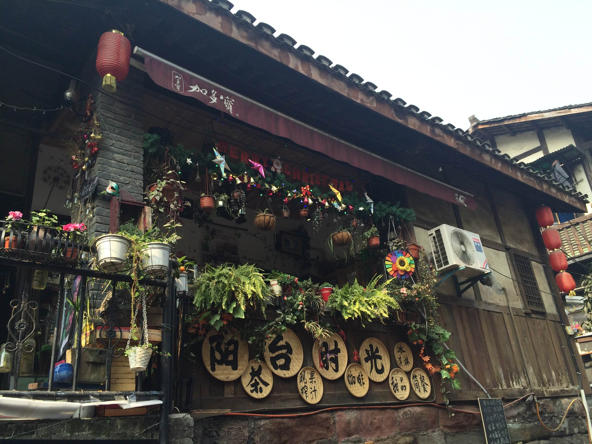

磁器口古镇
Ciqikou Ancient Townt

磁器口最早的名字叫白岩场，始于（998—1003年）宋真宗咸平年间，因为这里曾有一座白岩寺而得名。
明建文四年，建文帝朱允炆被其四叔朱棣篡位，逃出皇宫后削发为僧。当他流落到巴渝一带时，曾在白岩山上的宝轮寺隐匿长达四五年。世人知情后，就以皇帝真龙天子曾经隐居在此的事实而将宝轮寺改名为龙隐寺，白岩场也被改称为龙隐镇。
清朝初年，瓷器在很长一段时间里成为龙隐镇的主要产业。1918年，瓷器本地商绅集资在镇中青草坡创建了新工艺制瓷的“蜀瓷厂”，远销蜀外。后来随着工艺进步，瓷器品种增多，名气也扩大了起来。龙隐镇里，瓷器业最发达时有70多家。
民国时期，重庆成为陪都，因为水运方便，龙隐镇成为嘉陵江中上游各个州、县和沿江支流的农副土特产的集散之地，城里的一些大商贩干在磁器口开设分店收购货物，输出以棉纱、布匹、煤油、盐糖、洋广杂货、日用百货、五金颜料、土碗土纸和特产烟丝等为大宗。据统计磁器口每天有300多艘（船均载重10吨）货船进出码头，有商号、货栈和各种作坊达1670多家，摊贩760多户。每天都有300多艘（船均载重10吨）货船进出码头。码头河坝中搭建起临时街道，有上河街、中河街、下河街。还有专业性的木竹街、铁货街、陶瓷街和猪市、米市，各有一地，各为其市。这些商人渐渐为龙隐镇改口，叫成了瓷器口，缘由是这样更贴切、顺口。后来，
因为“瓷”字与“磁”相通，又被叫成磁器口。磁器口的商贸集中在大码头和靠码头的金蓉正街，除大码头外，还有历史悠久的4家丝厂，一家制呢厂，24兵工厂（现特钢厂），25兵工厂（现嘉陵厂），都设有自己的货运码头。码头上从早到晚，水陆两路，商旅川流不息，装卸搬运，络绎不绝。行商坐商，批零量购，货畅其流。大码头右侧的豆芽湾，是米粮帮、木材帮、篾货帮、煤炭帮的地盘。与码头河街相邻的是铁货街、猪市、鸡鸭蛋市和盐市口。各行业的同业公会都有事务所，食品糕点业26家，棉纱布业20家，茶馆酒馆116家。